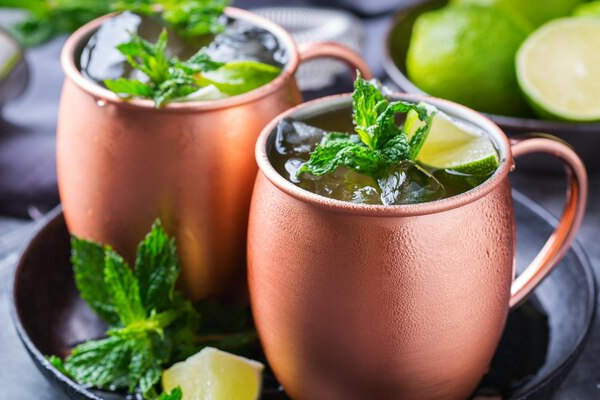

Moscow Mule

Ingredientes:
60 ml de vodka
120 ml de ginger beer (cerveja de gengibre)
15 ml de suco de limão fresco
Gelo
Fatia de limão para decorar
Folhas de hortelã (opcional, para decorar)
Modo de preparo:
Encha um copo de cobre ou um copo alto com gelo.
Adicione a vodka e o suco de limão fresco no copo.
Complete o copo com ginger beer (cerveja de gengibre).
Mexa suavemente com uma colher longa para misturar os ingredientes.
Decore o copo com uma fatia de limão e, se desejar, folhas de hortelã para dar um toque fresco.
Sirva imediatamente e aproveite seu Moscow Mule gelado!
O copo de cobre é tradicionalmente usado para servir o Moscow Mule, pois ajuda a manter a bebida gelada por mais tempo.
Certifique-se de usar ginger beer autêntica para obter o sabor característico deste coquetel. Aprecie seu Moscow Mule!